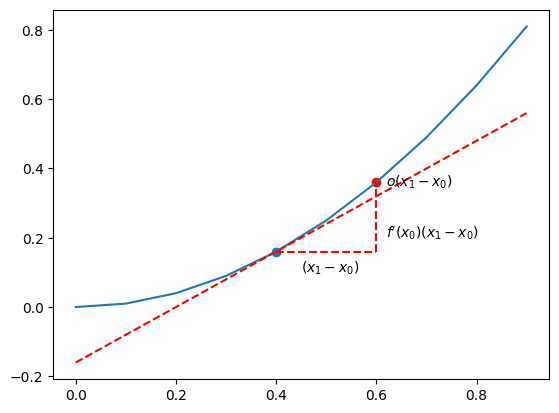

Math Cheatsheet for ML
Calculus Gradient
def z = f ( x ) z = f(\bold{x}) z = f ( x ) x = [ x 1 x 2 . . . x n ] \bold{x} = \begin{bmatrix}
x_1\\x_2\\...\\x_n
\end{bmatrix} x = x 1 x 2 ... x n
∇ f = ∂ f ∂ x = [ ∂ f ∂ x 1 , . . . , ∂ f ∂ x n ] \nabla f = \frac{\partial f}{\partial \bold{x}} = [\frac{\partial f}{\partial x_1},..., \frac{\partial f}{\partial x_n}] ∇ f = ∂ x ∂ f = [ ∂ x 1 ∂ f , ... , ∂ x n ∂ f ] output :
is a row vector in the input space.
go to the direction where goes upward fastest.
magnitude (length) is the gradient of this direction.
in addition:
∇ f ( x ) + ∇ g ( x ) = ( ∂ f ( x ) ∂ x 1 + ∂ g ( x ) ∂ x 1 , . . . , ∂ f ( x ) ∂ x n + ∂ g ( x ) ∂ x n ) = ( ∂ f ( x ) + g ( x ) ∂ x 1 , . . . , ∂ f ( x ) + g ( x ) ∂ x n ) = ∇ ( f ( x ) + g ( x ) ) \quad \nabla f(\bold{x}) + \nabla g(\bold{x}) \\
= (\frac{\partial f(\bold{x})}{\partial x_1} + \frac{\partial g(\bold{x})}{\partial x_1},..., \frac{\partial f(\bold{x})}{\partial x_n} + \frac{\partial g(\bold{x})}{\partial x_n}) \\
= (\frac{\partial f(\bold{x}) + g(\bold{x})}{\partial x_1},...,\frac{\partial f(\bold{x}) + g(\bold{x})}{\partial x_n}) \\
= \nabla (f(\bold{x}) + g(\bold{x})) ∇ f ( x ) + ∇ g ( x ) = ( ∂ x 1 ∂ f ( x ) + ∂ x 1 ∂ g ( x ) , ... , ∂ x n ∂ f ( x ) + ∂ x n ∂ g ( x ) ) = ( ∂ x 1 ∂ f ( x ) + g ( x ) , ... , ∂ x n ∂ f ( x ) + g ( x ) ) = ∇ ( f ( x ) + g ( x ))
∇ ( f g ) = f ∇ g + g ∇ f \nabla(fg) = f\nabla g + g\nabla f ∇ ( f g ) = f ∇ g + g ∇ f
∇ ( f g ) = g ∇ f − f ∇ g g 2 \nabla(\frac{f}{g}) = \frac{g\nabla f - f\nabla g}{g^2} ∇ ( g f ) = g 2 g ∇ f − f ∇ g
∂ ( x T ) = ( ∂ x ) T \partial (x^T) = (\partial x)^T ∂ ( x T ) = ( ∂ x ) T
∂ x T A x ∂ x = x T ( A + A T ) \frac{\partial x^T A x}{\partial x} = x^T(A + A^T) ∂ x ∂ x T A x = x T ( A + A T )
Lagrange Multiplier
Q1 : constrain g ( x , y ) = 0 g(x,y) = 0 g ( x , y ) = 0 f ( x , y ) f(x,y) f ( x , y )
→ \to → ( x 0 , y 0 ) (x_0,y_0) ( x 0 , y 0 ) ∇ f ( x 0 , y 0 ) \nabla f(x_0,y_0) ∇ f ( x 0 , y 0 ) ∇ g ( x 0 , y 0 ) \nabla g(x_0,y_0) ∇ g ( x 0 , y 0 )
→ \to → ∇ f ( x 0 , y 0 ) = λ ∇ g ( x 0 , y 0 ) , λ ∈ R \nabla f(x_0,y_0) = \lambda \nabla g(x_0,y_0), \lambda \in R ∇ f ( x 0 , y 0 ) = λ ∇ g ( x 0 , y 0 ) , λ ∈ R
→ \to → F ( x , y ) = f ( x , y ) − λ g ( x , y ) F(x,y) = f(x,y) - \lambda g(x,y) F ( x , y ) = f ( x , y ) − λ g ( x , y ) ∇ F ( x 0 , y 0 ) = 0 ⃗ \nabla F(x_0,y_0) = \vec{0} ∇ F ( x 0 , y 0 ) = 0
→ \to → ∇ F ( x 0 , y 0 ) = 0 ⃗ g ( x , y ) = 0 \quad\nabla F(x_0,y_0) = \vec{0} \quad g(x,y) = 0 ∇ F ( x 0 , y 0 ) = 0 g ( x , y ) = 0
Q2 : constrains g 1 ( x , y ) = 0 g_1(x,y) = 0 g 1 ( x , y ) = 0 g 2 ( x , y ) = 0 g_2(x,y) = 0 g 2 ( x , y ) = 0 f ( x , y ) f(x,y) f ( x , y )
→ \to → F ( x , y ) = f ( x , y ) − λ 1 g 1 ( x , y ) − λ 2 g 2 ( x , y ) F(x,y) = f(x,y) - \lambda_1 g_1(x,y) - \lambda_2 g_2(x,y) F ( x , y ) = f ( x , y ) − λ 1 g 1 ( x , y ) − λ 2 g 2 ( x , y )
→ \to →
Taylor Expansion
for a given y = f ( x ) y = f(x) y = f ( x )
f ( x 1 ) − f ( x 0 ) = f ′ ( x 0 ) ( x 1 − x 0 ) + o ( x 1 − x 0 ) f(x_1)-f(x_0) = f'(x_0)(x_1-x_0) + o(x_1-x_0) f ( x 1 ) − f ( x 0 ) = f ′ ( x 0 ) ( x 1 − x 0 ) + o ( x 1 − x 0 )

then we get:
f ( x 1 ) − f ( x 0 ) = f ′ ( x 0 ) ( x 1 − x 0 ) + f ′ ′ ( x 0 ) 2 ! ( x 1 − x 0 ) 2 + f 3 ( x 0 ) 3 ! ( x 1 − x 0 ) 3 + . . . + f n ( x 0 ) n ! ( x 1 − x 0 ) n + . . . f(x_1)-f(x_0) = f'(x_0)(x_1-x_0) + \frac{f''(x_0)}{2!}(x_1-x_0)^2 + \frac{f^3(x_0)}{3!}(x_1-x_0)^3 + ... + \frac{f^n(x_0)}{n!}(x_1-x_0)^n + ... f ( x 1 ) − f ( x 0 ) = f ′ ( x 0 ) ( x 1 − x 0 ) + 2 ! f ′′ ( x 0 ) ( x 1 − x 0 ) 2 + 3 ! f 3 ( x 0 ) ( x 1 − x 0 ) 3 + ... + n ! f n ( x 0 ) ( x 1 − x 0 ) n + ...
then we get:
f ( x 1 ) = f ( x 0 ) + f ′ ( x 0 ) ( x 1 − x 0 ) + f ′ ′ ( x 0 ) 2 ! ( x 1 − x 0 ) 2 + f 3 ( x 0 ) 3 ! ( x 1 − x 0 ) 3 + . . . + f n ( x 0 ) n ! ( x 1 − x 0 ) n + . . . f(x_1) = f(x_0) + f'(x_0)(x_1-x_0) + \frac{f''(x_0)}{2!}(x_1-x_0)^2 + \frac{f^3(x_0)}{3!}(x_1-x_0)^3 + ... + \frac{f^n(x_0)}{n!}(x_1-x_0)^n + ... f ( x 1 ) = f ( x 0 ) + f ′ ( x 0 ) ( x 1 − x 0 ) + 2 ! f ′′ ( x 0 ) ( x 1 − x 0 ) 2 + 3 ! f 3 ( x 0 ) ( x 1 − x 0 ) 3 + ... + n ! f n ( x 0 ) ( x 1 − x 0 ) n + ...
n → ∞ n \to \infty n → ∞
or:
f ( x ) = f ( 0 ) + f ′ ( 0 ) x + f ′ ′ ( 0 ) 2 ! x 2 + f 3 ( 0 ) 3 ! x 3 + . . . + f n ( 0 ) n ! x n + . . . f(x) = f(0) + f'(0)x + \frac{f''(0)}{2!}x^2 + \frac{f^3(0)}{3!}x^3 + ... + \frac{f^n(0)}{n!}x^n + ... f ( x ) = f ( 0 ) + f ′ ( 0 ) x + 2 ! f ′′ ( 0 ) x 2 + 3 ! f 3 ( 0 ) x 3 + ... + n ! f n ( 0 ) x n + ...
n → ∞ n \to \infty n → ∞
e x = 1 + x + x 2 2 ! + x 3 3 ! + . . . e^x = 1 + x + \frac{x^2}{2!} + \frac{x^3}{3!} + ... e x = 1 + x + 2 ! x 2 + 3 ! x 3 + ...
Newton's Method
given function f : R n → R f: R^n \to R f : R n → R f ( x 1 ) = f ( x 0 ) + ∇ f ( x 0 ) ( x 1 − x 0 ) + 1 2 ( x 1 − x 0 ) T ∇ 2 f ( x 0 ) ( x 1 − x 0 ) f(x_1) = f(x_0) + \nabla f(x_0)(x_1 - x_0) + \frac{1}{2}(x_1 - x_0)^T \nabla^2f(x_0) (x_1 - x_0) f ( x 1 ) = f ( x 0 ) + ∇ f ( x 0 ) ( x 1 − x 0 ) + 2 1 ( x 1 − x 0 ) T ∇ 2 f ( x 0 ) ( x 1 − x 0 )
we wish to know when does ∂ f ∂ x = 0 \frac{\partial f}{\partial x} = 0 ∂ x ∂ f = 0 ∇ f ( x 1 ) = ∇ f ( x 0 ) + ( ∇ 2 f ( x 0 ) ( x 1 − x 0 ) ) T = 0 \nabla f(x_1) = \nabla f(x_0) + (\nabla^2f(x_0) (x_1 - x_0))^T = 0 ∇ f ( x 1 ) = ∇ f ( x 0 ) + ( ∇ 2 f ( x 0 ) ( x 1 − x 0 ) ) T = 0 x 1 = x 0 − ( ∇ 2 f ( x 0 ) ) − 1 ( ∇ f ( x 0 ) ) T x_1 = x_0 - (\nabla^2 f(x_0))^{-1}(\nabla f(x_0))^T x 1 = x 0 − ( ∇ 2 f ( x 0 ) ) − 1 ( ∇ f ( x 0 ) ) T Hessian matrix to replace ∇ 2 \nabla^2 ∇ 2 x k + 1 = x k − ( H f ( x k ) ) − 1 ( ∇ f ( x k ) ) T x_{k + 1} = x_{k} - (H_f(x_{k}))^{-1}(\nabla f(x_{k}))^T x k + 1 = x k − ( H f ( x k ) ) − 1 ( ∇ f ( x k ) ) T
now, in order to answer where the minimum of f f f
initiate a x 0 x_0 x 0
(for better explanation) get x 1 = x 0 − ( H f ( x 0 ) ) − 1 ( ∇ f ( x 0 ) ) T x_1 = x_0 - (H_f(x_0))^{-1}(\nabla f(x_0))^T x 1 = x 0 − ( H f ( x 0 ) ) − 1 ( ∇ f ( x 0 ) ) T
iteratively do x k + 1 = x k − ( H f ( x k ) ) − 1 ( ∇ f ( x k ) ) T x_{k+1} = x_{k} - (H_f(x_{k}))^{-1}(\nabla f(x_{k}))^T x k + 1 = x k − ( H f ( x k ) ) − 1 ( ∇ f ( x k ) ) T
Gauss-Newton Method
optimization on least square problem f ( x ) = y − A x f(x) = y - Ax f ( x ) = y − A x ∣ ∣ f ( x ) ∣ ∣ 2 ||f(x)||^2 ∣∣ f ( x ) ∣ ∣ 2 f ( x ) f(x) f ( x ) ∂ ∣ ∣ f ( x 0 ) + ∇ f ( x 0 ) ( x 1 − x 0 ) ∣ ∣ 2 ∂ x 1 = 0 \frac{\partial || f(x_0) + \nabla f(x_0)(x_1 - x_0)||^2}{\partial x_1} = 0 ∂ x 1 ∂ ∣∣ f ( x 0 ) + ∇ f ( x 0 ) ( x 1 − x 0 ) ∣ ∣ 2 = 0
x 1 = x 0 − ( ∇ f T ( x 0 ) ∇ f ( x 0 ) ) − 1 ∇ f T ( x 0 ) f ( x 0 ) x_1 = x_0 - (\nabla f^T(x_0)\nabla f(x_0))^{-1}\nabla f^T(x_0)f(x_0) x 1 = x 0 − ( ∇ f T ( x 0 ) ∇ f ( x 0 ) ) − 1 ∇ f T ( x 0 ) f ( x 0 )
Then ∇ f ( x 0 ) \nabla f(x_0) ∇ f ( x 0 ) f ( x 0 ) f(x_0) f ( x 0 )
Linear Algebra Least Squares
There are m m m n n n
Data: X m × ( n + 1 ) = [ 1 x 11 x 12 . . . x 1 n 1 x 21 x 22 . . . x 2 n . . . . . . . . . . . . . . . 1 x m 1 x m 2 . . . x m n ] X_{m\times (n+1)} = \begin{bmatrix}
1 & x_{11} & x_{12} & ... & x_{1n}\\
1 & x_{21} & x_{22} & ... & x_{2n}\\
... & ... & ... & ... & ...\\
1 & x_{m1} & x_{m2} & ... & x_{mn}
\end{bmatrix} X m × ( n + 1 ) = 1 1 ... 1 x 11 x 21 ... x m 1 x 12 x 22 ... x m 2 ... ... ... ... x 1 n x 2 n ... x mn
Label: Y m × 1 = [ y 1 y 2 . . . y m ] Y_{m \times 1} = \begin{bmatrix}
y_1\\
y_2\\
...\\
y_m
\end{bmatrix} Y m × 1 = y 1 y 2 ... y m
to predict y ^ = θ 0 + θ 1 x 1 + θ 2 x 2 + . . . + θ n x n \hat{y} = \theta_0 + \theta_1x_1 + \theta_2x_2 + ... + \theta_nx_n y ^ = θ 0 + θ 1 x 1 + θ 2 x 2 + ... + θ n x n θ ( n + 1 ) × 1 = [ θ 0 θ 1 . . . θ n ] \theta_{(n+1) \times 1} = \begin{bmatrix}
\theta_0\\
\theta_1\\
...\\
\theta_n
\end{bmatrix} θ ( n + 1 ) × 1 = θ 0 θ 1 ... θ n
therefore Y ^ = X θ \hat{Y} = X\theta Y ^ = Xθ
we want least square error, loss function L = 1 2 ( X θ − Y ) T ( X θ − Y ) L = \frac{1}{2}(X\theta - Y)^T(X\theta - Y) L = 2 1 ( Xθ − Y ) T ( Xθ − Y )
→ ∂ L ∂ θ = 0 \to\frac{\partial L}{\partial \theta} = 0 → ∂ θ ∂ L = 0
→ θ = ( X T X ) − 1 X T Y \to\theta = (X^TX)^{-1}X^TY → θ = ( X T X ) − 1 X T Y
Jacobian & Hessian
Jacobian
function F : R n → R m F: R^n \to R^m F : R n → R m x = [ x 1 , . . . , x n ] T \bold{x} = [x_1,...,x_n]^T x = [ x 1 , ... , x n ] T F ( x ) = [ y 1 ( x ) , . . . , y m ( x ) ] T F(\bold{x}) = [y_1(\bold{x}),...,y_m(\bold{x})]^T F ( x ) = [ y 1 ( x ) , ... , y m ( x ) ] T m × n m \times n m × n J F ( x ) = ∂ F ∂ x = [ ∂ y 1 ∂ x 1 . . . ∂ y 1 ∂ x n . . . . . . . . . ∂ y m ∂ x 1 . . . ∂ y m ∂ x n ] J_F(\bold{x}) = \frac{\partial F}{\partial \bold{x}} = \begin{bmatrix}
\frac{\partial y_1}{\partial x_1} & ... & \frac{\partial y_1}{\partial x_n}\\
...&...&...\\
\frac{\partial y_m}{\partial x_1}&...&\frac{\partial y_m}{\partial x_n}
\end{bmatrix} J F ( x ) = ∂ x ∂ F = ∂ x 1 ∂ y 1 ... ∂ x 1 ∂ y m ... ... ... ∂ x n ∂ y 1 ... ∂ x n ∂ y m
Hessian
function F : R n → R F: R^n \to R F : R n → R n × n n \times n n × n H F ( x ) = ∇ 2 F ( x ) = [ ∂ 2 F ∂ x 1 2 . . . ∂ 2 F ∂ x 1 x n . . . . . . . . . ∂ 2 F ∂ x n x 1 . . . ∂ 2 F ∂ x n 2 ] H_F(\bold{x}) = \nabla^2F(\bold{x}) = \begin{bmatrix}
\frac{\partial^2 F}{\partial x_1^2}&...&\frac{\partial^2 F}{\partial x_1x_n}\\
...&...&...\\
\frac{\partial^2 F}{\partial x_nx_1}&...&\frac{\partial^2 F}{\partial x_n^2}\\
\end{bmatrix} H F ( x ) = ∇ 2 F ( x ) = ∂ x 1 2 ∂ 2 F ... ∂ x n x 1 ∂ 2 F ... ... ... ∂ x 1 x n ∂ 2 F ... ∂ x n 2 ∂ 2 F
Determinant
square matrix A A A det A \det A det A A = [ a b c d ] A = \begin{bmatrix}
a & b\\
c & d
\end{bmatrix} A = [ a c b d ] det A = ∣ a b c d ∣ \det A = \begin{vmatrix}
a & b\\
c & d
\end{vmatrix} det A = a c b d
3 basic properties
det I = 1 \det I = 1 det I = 1
row exchanges, sign changes: eg. ∣ c d a b ∣ = − ∣ a b c d ∣ \begin{vmatrix}
c & d\\
a & b
\end{vmatrix} = - \begin{vmatrix}
a & b\\
c & d
\end{vmatrix} c a d b = − a c b d
add vector in row, add determinant in row: eg. ∣ a + a ′ b + b ′ c d ∣ = ∣ a b c d ∣ + ∣ a ′ b ′ c d ∣ \begin{vmatrix}
a + a' & b + b'\\
c & d
\end{vmatrix} = \begin{vmatrix}
a & b\\
c & d
\end{vmatrix} + \begin{vmatrix}
a' & b'\\
c & d
\end{vmatrix} a + a ′ c b + b ′ d = a c b d + a ′ c b ′ d
derived properties
if A A A det A = 0 \det A = 0 det A = 0
...
how to calculate
A = [ a b c d ] , det A = a d − b c A = \begin{bmatrix}
a & b\\
c & d
\end{bmatrix}, \det A = ad - bc A = [ a c b d ] , det A = a d − b c
If: A = [ a 11 a 12 . . . a 1 n a 21 a 22 . . . a 2 n . . . . . . . . . . . . a n 1 a n 2 . . . a n n ] A = \begin{bmatrix}
a_{11} & a_{12} & ... & a_{1n}\\
a_{21} & a_{22} & ... & a_{2n}\\
... & ... & ... & ...\\
a_{n1} & a_{n2} & ... & a_{nn}
\end{bmatrix} A = a 11 a 21 ... a n 1 a 12 a 22 ... a n 2 ... ... ... ... a 1 n a 2 n ... a nn
let: M i j = [ a 11 . . . a 1 ( j − 1 ) a 1 ( j + 1 ) . . . a 1 n . . . . . . . . . . . . . . . . . . a ( i − 1 ) 1 . . . a ( i − 1 ) ( j − 1 ) a ( i − 1 ) ( j + 1 ) . . . a ( i − 1 ) n a ( i + 1 ) 1 . . . a ( i + 1 ) ( j − 1 ) a ( i + 1 ) ( j + 1 ) . . . a ( i + 1 ) n . . . . . . . . . . . . . . . . . . a n 1 . . . a n ( j − 1 ) a n ( j + 1 ) . . . a n n ] M_{ij} = \begin{bmatrix}
a_{11} & ... & a_{1(j-1)} & a_{1(j+1)} & ... & a_{1n}\\
... & ... & ... & ... & ... & ...\\
a_{(i-1)1} & ... & a_{(i-1)(j-1)} & a_{(i-1)(j+1)} & ... & a_{(i-1)n}\\
a_{(i+1)1} & ... & a_{(i+1)(j-1)} & a_{(i+1)(j+1)} & ... & a_{(i+1)n}\\
... & ... & ... & ... & ... & ...\\
a_{n1} & ... & a_{n(j-1)} & a_{n(j+1)} & ... & a_{nn}
\end{bmatrix} M ij = a 11 ... a ( i − 1 ) 1 a ( i + 1 ) 1 ... a n 1 ... ... ... ... ... ... a 1 ( j − 1 ) ... a ( i − 1 ) ( j − 1 ) a ( i + 1 ) ( j − 1 ) ... a n ( j − 1 ) a 1 ( j + 1 ) ... a ( i − 1 ) ( j + 1 ) a ( i + 1 ) ( j + 1 ) ... a n ( j + 1 ) ... ... ... ... ... ... a 1 n ... a ( i − 1 ) n a ( i + 1 ) n ... a nn
let: c i j = ( − 1 ) j + 1 det M i j c_{ij} = (-1)^{j + 1} \det M_{ij} c ij = ( − 1 ) j + 1 det M ij
then: det A = ∑ r = 1 n a i r c i r \det A = \sum_{r = 1}^{n} a_{ir}c_{ir} det A = ∑ r = 1 n a i r c i r
in another word: det A = a 11 det M 11 − a 12 det M 12 + a 13 det M 13 − . . . + ( − 1 ) n + 1 a 1 n det M 1 n \det A = a_{11}\det M_{11} - a_{12}\det M_{12} + a_{13}\det M_{13} - ... + (-1)^{n+1} a_{1n}\det M_{1n} det A = a 11 det M 11 − a 12 det M 12 + a 13 det M 13 − ... + ( − 1 ) n + 1 a 1 n det M 1 n
Eigenvalues & Eigenvectors
square matrix A A A λ \lambda λ v v v A v = λ v Av = \lambda v A v = λ v
→ ( A − λ I ) v = 0 \to (A - \lambda I) v = 0 → ( A − λ I ) v = 0
v v v 0 → ( A − λ I ) 0 \to (A - \lambda I) 0 → ( A − λ I )
→ det ( A − λ I ) = 0 \to \det(A - \lambda I) = 0 → det ( A − λ I ) = 0
Singular Value Decomposition (SVD)
Probability Maximum Likelihood Estimation (MLE)
Entropy